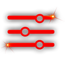

Start and update the game
The launcher checks for updates automatically and installs them before launch.
Everything you need to play and manage the game.
The launcher checks for updates automatically and installs them before launch.
Open Account Manager to add, edit, import, export, and back up account profiles.

Open Settings for graphics/options, UI scale/theme, music, and diagnostics.
If the network is unavailable, the launcher switches to offline mode and offers reconnect retries.
View logs, find where files are stored, and switch on crash dump collection if needed.
Open Log to view live logs, filter entries, copy all, or save to a text file.
Persistent log files and crash dumps are stored in the launcher's folder.
Optional. Must be switched on in Settings → General → Diagnostics.
Use Log → Support Package... to create one ZIP file for support.
launcher.log.old if presentFollow these steps when reporting an issue.
Enable Verbose logging first if needed.
Use Log → Support Package... to generate the ZIP file.
Attach the generated file to your bug report.
CrossfireSupport_YYYYMMDD_HHMMSS.zipWrite short reproduction steps and when the issue happened.